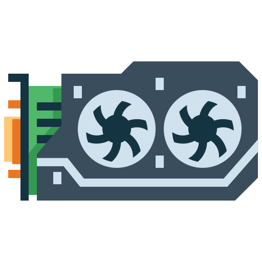
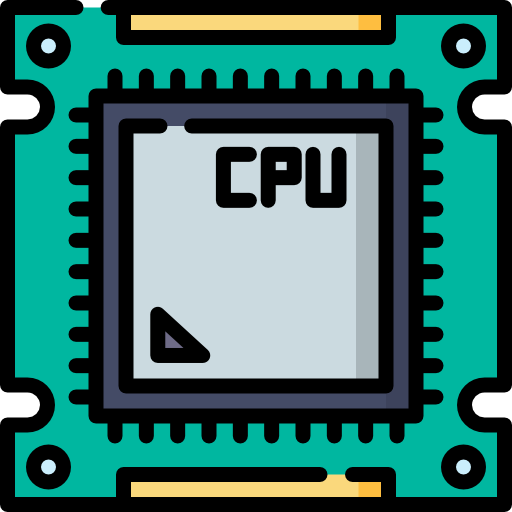
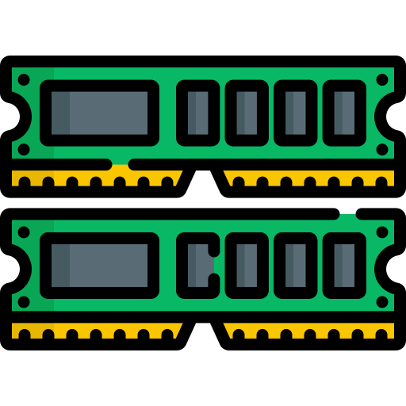

PC Gaming is awesome
PC gaming offers high-quality graphics, high frame rates, customizable controls, and access to many different types of games. PC gaming can also be a social activity, allowing players to connect and compete with friends online.

Main Gaming PC Components

Graphics Processing Unit
A GPU is the part of a gaming PC that creates and displays the graphics in games. It processes things like textures, lighting, shadows, and visual effects, helping games run smoothly at higher resolutions and frame rates.

Central Processing Unit
A CPU is the main processor of a gaming PC. It handles important tasks like game logic, physics, AI, and running programs, helping the game and other parts of the PC work together smoothly.

Random Access Memory
RAM is the PC short-term memory. It temporarily stores data that games and programs are using, allowing the CPU to access it quickly and helping games run smoothly.
Storage
Storage is where your PC permanently keeps files, games, apps, and the operating system. An SSD provides fast loading times, while an HDD offers more storage for a lower price.
Hey, you. You're finally awake. You were trying to cross the border, right? Walked right into that Imperial ambush, same as us, and that thief over there.
-Ralof, The Elder Scrolls V: Skyrim